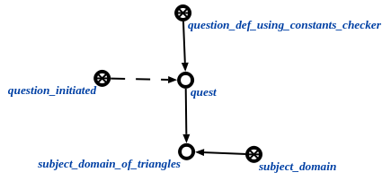

Задачей агента проверки наличия используемых констант у понятий, имеющих определение является нахождение ключевых элементов, у которых есть определение или пояснение, но нет используемых констант. Данный агент инициируется при условии появления в памяти вопросной конструкции, соответствующей запросу проверки наличия используемых констант у понятий, имеющих определений. Аргументом запроса является предметная область, для которой необходимо найти понятия, у которых есть определение или пояснение, но нет используемых констант. Пример вопросной конструкции представлен ниже:
